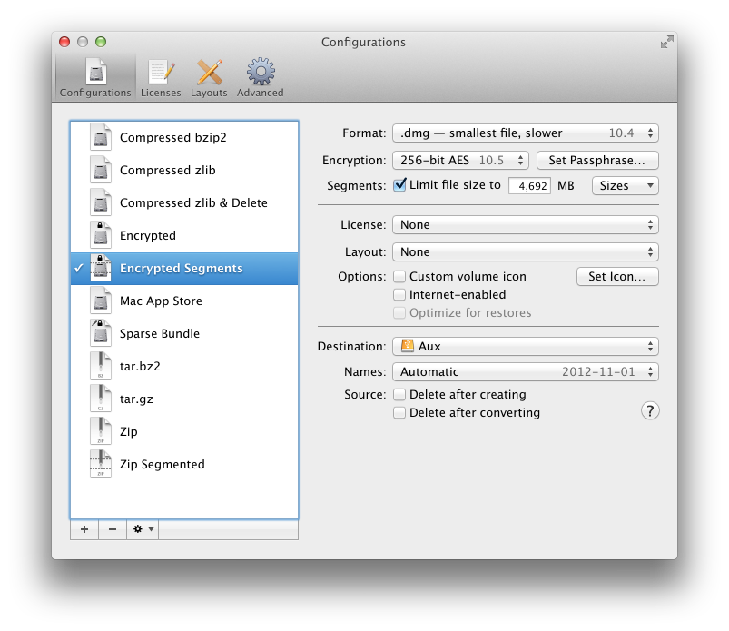

5.1 Configurations
DropDMG provides many options for creating disk images and archives. Configurations let you create named sets of these options, so that you can quickly switch between your favorite combinations rather than re-entering all the settings each time.


Use the + button to create a new configuration and the - button or the Delete key to remove one. Several commands are available in the action menu and contextual menu:
- Make Default
- Change the current configuration as shown in the DropDMG window. You can also double-click on a configuration in the list.
- Duplicate Configuration
- Create a new configuration with the same options as the selected one.
- Rename Configuration
- Change the name of the selected configuration. You can also click-and-hold on the name or press the Return or Enter key.
Tip: You can quickly change configurations, without first opening the Preferences window, by using the pop-up menu in the DropDMG window, by Control-clicking on DropDMG’s icon in the Dock, or by using Temporary options.
The following options are available for each configuration: